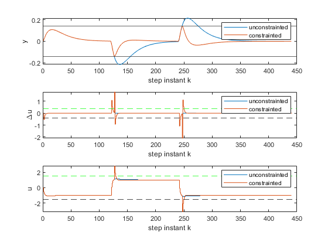

Contents
% PART B - costraints on 'u' & 'Δu', in addition to y % simulation for comparison b/n unconstrainted & constrainted
plant
continous system
T = 1; K = 1; num = K; den = conv([1 0], [T 1]); % discretize and state space model [numd, dend] = c2dm(num, den, 0.1); ad = [-dend(2:3) numd(3); 1 0 0; 0 0 0]; bd = [numd(2) 0 1]'; cd = [1 0 0]; % augmented system A = [ad zeros(size(ad, 1), size(cd, 1)); cd*ad eye(size(cd, 1))]; B = [bd; cd*bd]; C = [zeros(size(cd, 1), size(ad, 1)) eye(size(cd, 1))]; eig_open = eig(A); % open-loop poles % design parameters Q = C'*C; R = 0.1; Np = 46;
Laguerre parameters
N = 1; a = 0.5; [omega, psi] = dmpc(A, B, a, N, Np, Q, R); [Al, L0] = lagd(a, N); Kmpc = L0'*(omega\psi); A_closed = A-B*Kmpc; % closed loop poles eig_closed = eig(A_closed); % parameters for control simulation N_sim = 440; u_min= -1.5; u_max= 1.5; deltau_min= -0.4; deltau_max= 0.4; y_min = -0.14; y_max = 0.14; % y_min = -0.12; y_max = 0.12; % this results a response with oscillation r = zeros(N_sim, 1); % r = [ones(240, 1); -ones(200, 1)]; d = [ones(120, 1); -ones(120, 1); ones(200, 1)];
unconstrained control
xm = [0 0 0]'; xm_old = xm; yp = 0; u = 0; xf = [xm-xm_old; yp-r(1)]; buf = []; buf2 = []; for k = 1:N_sim deltau = -Kmpc*xf; u = u + deltau; xm = ad*xm + bd*(u + d(k)); yp = cd*xm; xf = [xm-xm_old; yp-r(k)]; xm_old = xm; buf = [buf; k yp u]; buf2 = [buf2; [k k+1]' [deltau deltau]' [u u]']; end
constrainted control
xm = [0 0 0]'; xm_old = xm; yp = 0; u = 0; xf = [xm-xm_old; yp-r(1)]; buf3 = []; buf4 = []; for k = 1:N_sim deltau = -Kmpc*xf; y = C*A*xf + C*B*deltau; if y <= y_min M_act = -C*B*L0'; b_act = -y_min + C*A*xf; lambda = -(M_act*(omega\M_act'))\(b_act + M_act*(omega\psi)*xf); deltau = -L0'*inv(omega)*(psi*xf + M_act'*lambda); end if y >= y_max M_act = C*B*L0'; b_act = y_max - C*A*xf; lambda = -(M_act*(omega\M_act'))\(b_act + M_act*(omega\psi)*xf); deltau = -L0'*inv(omega)*(psi*xf + M_act'*lambda); end % if (deltau >= deltau_max); deltau = deltau_max; end % if (deltau <= deltau_min); deltau = deltau_min; end u = u + deltau; % if (u >= u_max); u = u_max; end % if (u <= u_min); u = u_min; end xm = ad*xm + bd*(u + d(k)); yp = cd*xm; xf = [xm-xm_old; yp-r(k)]; xm_old = xm; buf3 = [buf3; k yp u]; buf4 = [buf4; [k k+1]' [deltau deltau]' [u u]']; end
comparison results of unconstrainted and constrainted
subplot 311, plot(buf(:, 1), [buf(:, 2), buf3(:, 2)]), hold on yline(y_min), yline(y_max) legend 'unconstrainted' 'constrainted' % axis([0 280 -1.2 1.2]), title 'output variable' xlabel 'step instant k', ylabel 'y' subplot 312, plot(buf2(:, 1), [buf2(:, 2), buf4(:, 2)]), hold on yline(deltau_min, 'k--'), yline(deltau_max, 'g--') legend 'unconstrainted' 'constrainted' % axis([0 280 -0.5 0.3]), title 'difference of control' xlabel 'step instant k', ylabel '\Deltau' subplot 313, stairs(buf(:, 1), [buf(:, 3), buf3(:, 3)]) % plot(buf2(:, 1), [buf2(:, 3), buf4(:, 3)]), hold on yline(u_min, 'k--'), yline(u_max, 'g--') legend 'unconstrainted' 'constrainted' % axis([0 280 -1.0 0.5]), title 'control variable' xlabel 'step instant k', ylabel 'u'